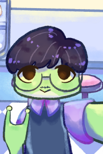

Olá, eu sou o Isaque
Sou Técnico em Programação de Jogos Digitais e atualmente sou estudante do Curso de Ciência da Computação.
Sobre mim
Sempre tive muito interesse pela área de programação e, desde cedo, sabia que esse seria o caminho profissional que gostaria de seguir. Durante o ensino médio, optei por realizar um curso técnico integrado e escolhi o curso de Programação de Jogos Digitais na ETEC de Heliópolis, onde pude aprofundar meus conhecimentos na área.
Após concluir o ensino médio, prestei o ENEM e utilizei minha nota para concorrer a uma bolsa pelo PROUNI. Consegui uma bolsa na Universidade Cruzeiro do Sul e optei por cursar Ciência da Computação, por ser uma formação mais abrangente, que poderia ampliar minhas possibilidades e oportunidades no mercado de trabalho.
Além da faculdade, gosto de dedicar meu tempo livre a alguns hobbies, como tocar bateria, jogar RPG de mesa e explorar diferentes tipos de jogos eletrônicos. Atualmente, também estou trabalhando, junto com outros membros do meu grupo, na continuação do jogo que desenvolvemos como projeto de TCC durante o curso técnico na ETEC.
Interesses
Meus Interesses
- Desenvolvimento de jogos independentes
- Desenvolvimento em Python
- Música e RPG de mesa
Meus jogos favoritos
- Hades
- Cuphead
- Minecraft
Estudos
Meus estudos atualmente
| Tema | Conhecimento atual | Próximo passo |
|---|---|---|
| HTML e CSS | Básico | Exercícios de layout |
| Back-end | Python | Criar projetos reais |
| Modelagem de banco de dados | Intermediário | Aplicar no MySQL e derivados |
Maré de Esperança
Veja um pouco sobre meu Projeto de TCC da ETEC

Formações
Bacharelado em Ciência da Computação Jan/2025 – Dez/2029 (Previsão)
Universidade Cruzeiro do Sul
Médio Técnico em Programação de Jogos Digitais (M-Tec) Concluído em 2025
ETEC de Heliópolis Arquiteto Ruy Ohtake
Mídia
Um pouco da minha trila sonora
Ouça uma das minhas músicas preferidas e me conheça mais.
Laufey - Valentine
Trailer do meu jogo favorito
Conheça o treiler de Hades, meu jogo favorito e minha inspiração artistica.
Contato
Formulário de contato (demonstrativo)
Formulário demonstrativo - os dados não serão enviados.
Envie uma mensagem caso possua interesse!